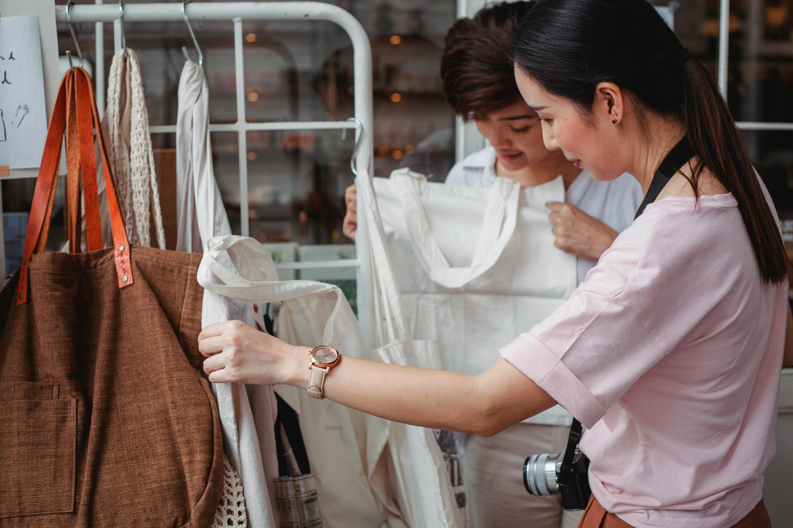
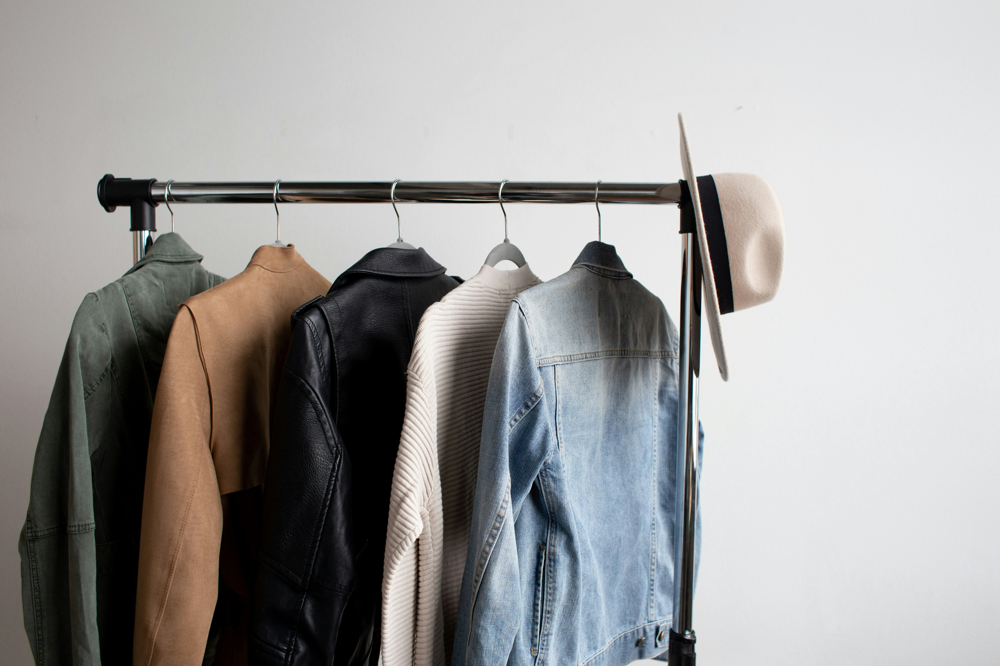
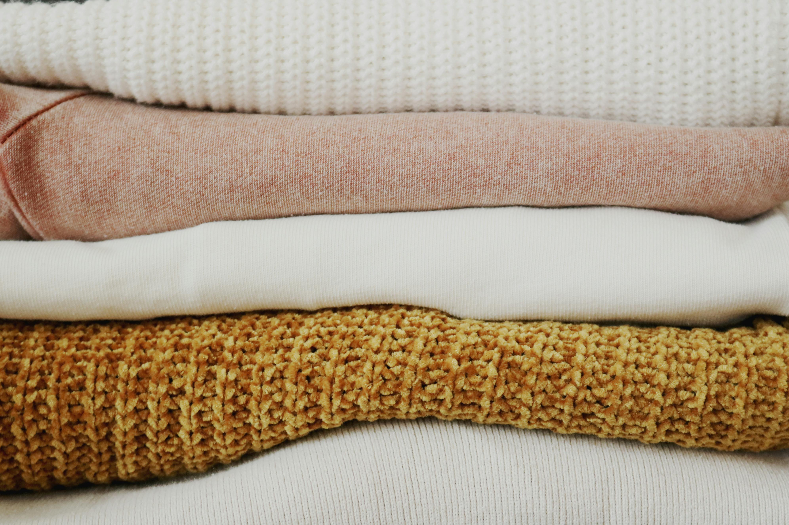

Hidden Costs of the Fast Fashion Industry
Uncover the true impact of fast fashion on the environment and workers' rights. Learn why fast fashion is unsustainable and how making more informed shopping decisions can contribute to positive change in the industry.

Top Sustainable Fashion Brands You Need to Know
Explore a curated list of top sustainable fashion brands that prioritize ethical practices and eco-friendly materials. Learn which brands are making a positive impact on the environment and how you can support their mission through conscious shopping choices.

How to Build a Sustainable Wardrobe on a Budget
Discover practical tips for creating a sustainable wardrobe without overspending. From thrifting to choosing timeless pieces, find out how to shop smart, save money, and reduce your environmental footprint while still looking stylish.
Recent Breakthroughs in Sustainable Fashion
Stay informed with the latest innovations and trends in sustainable fashion. Learn about new materials, cutting-edge technologies, and industry shifts that are paving the way for a more eco-conscious future in fashion.

Eco-Friendly Fabrics: What to Shop for
Understand the benefits of eco-friendly fabrics and how to identify them while shopping. Get insights on materials like organic cotton, Tencel, and recycled fibers, and learn why these options are better for the planet and your wardrobe.
Upcycling 101: Reviving Old Clothes
Find inspiration to breathe new life into your old or unwanted clothes through upcycling. Learn creative techniques for repurposing outdated garments into stylish, unique pieces that reflect your personal style while reducing waste.